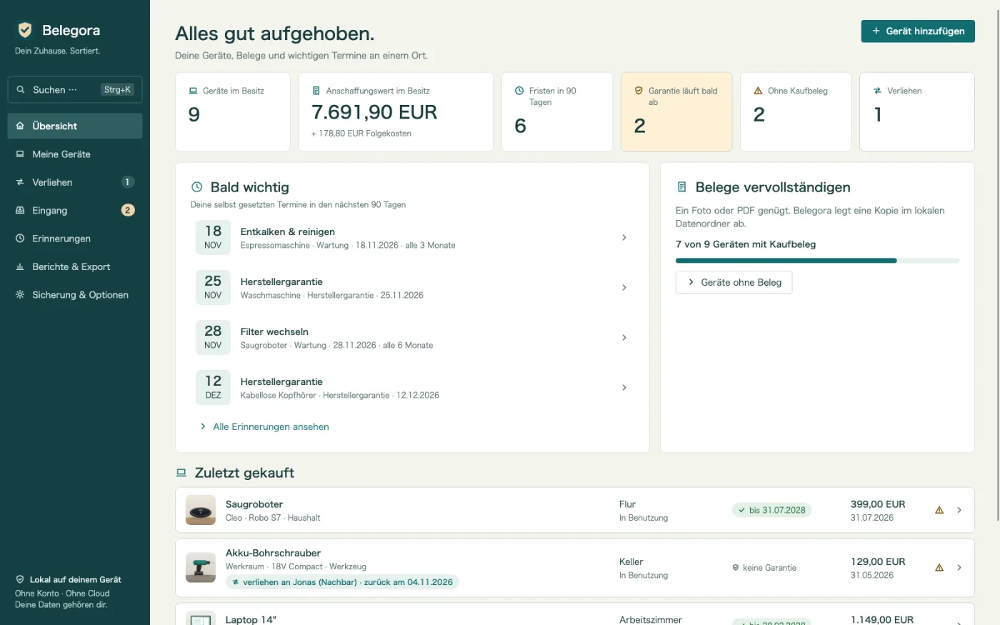
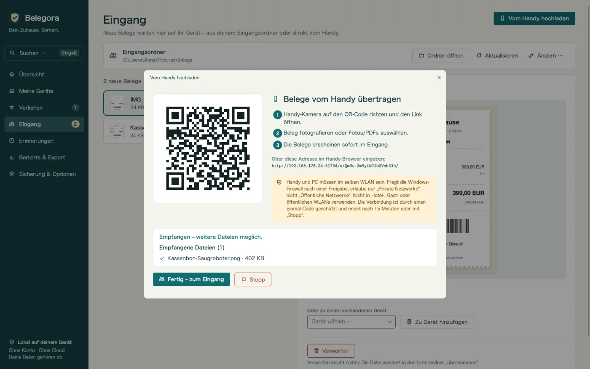
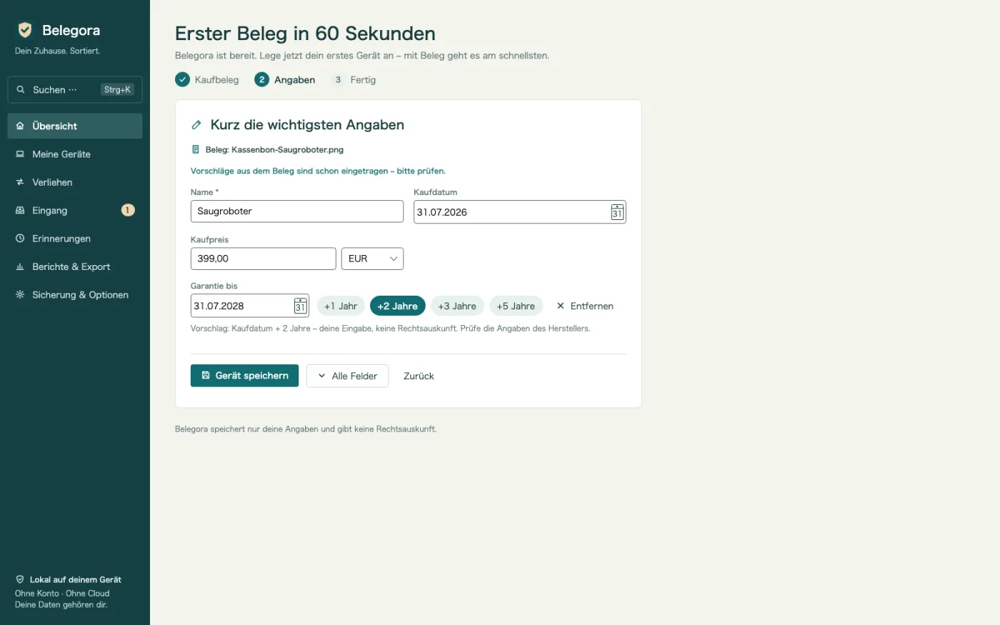
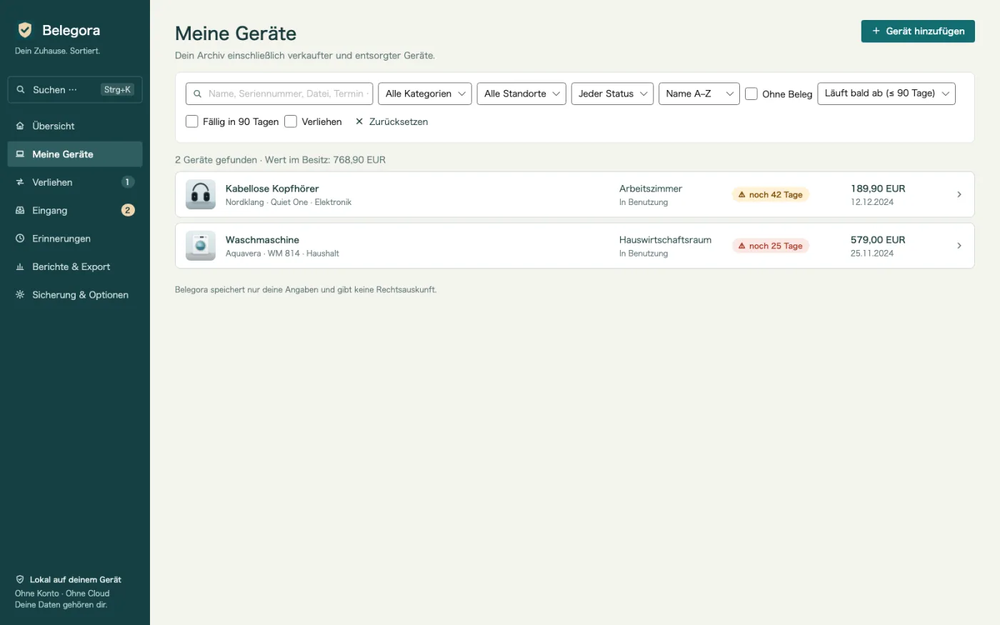
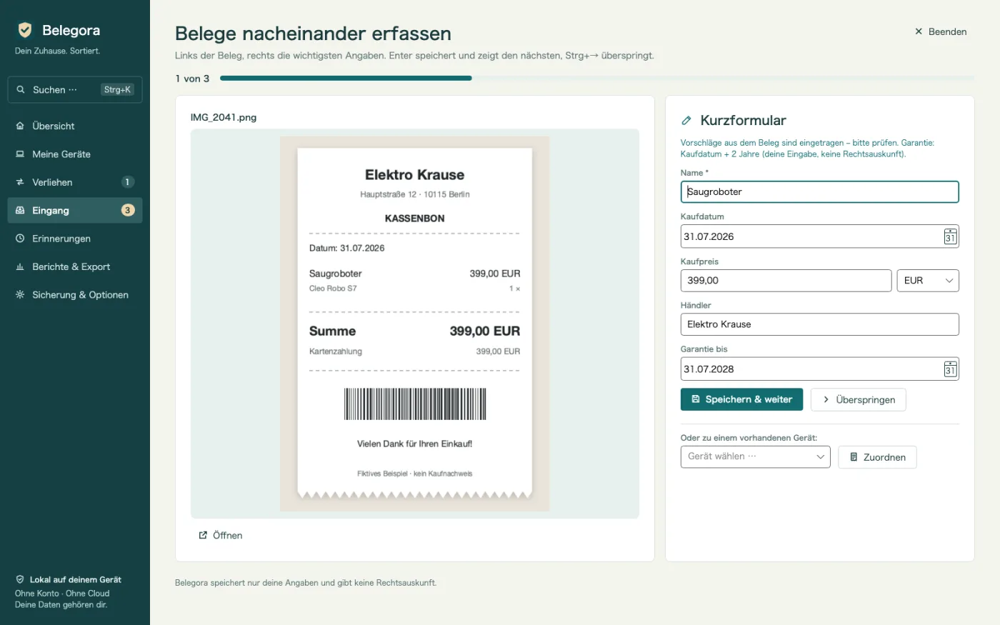
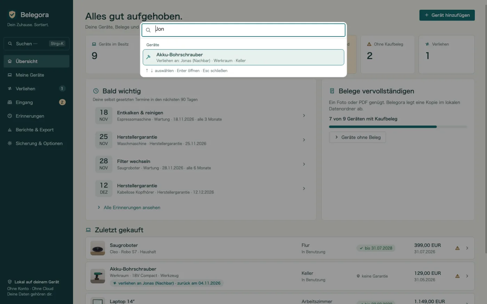
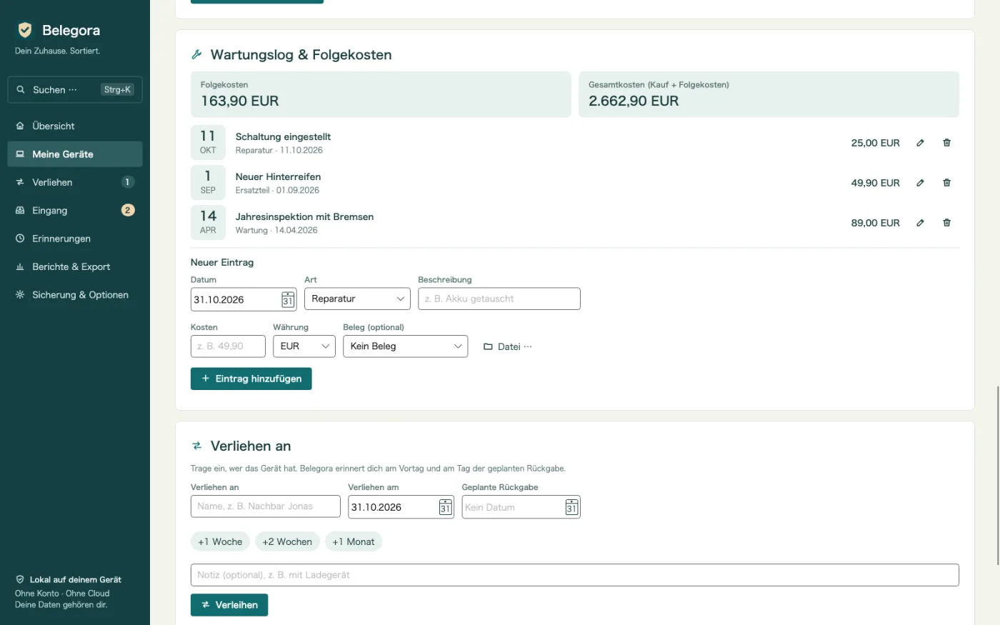
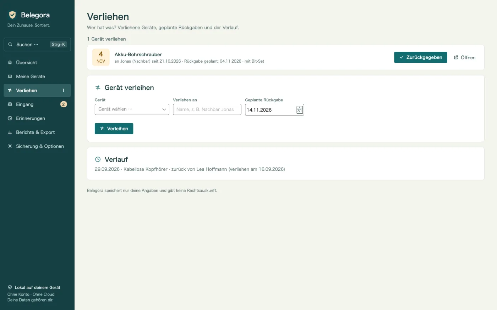
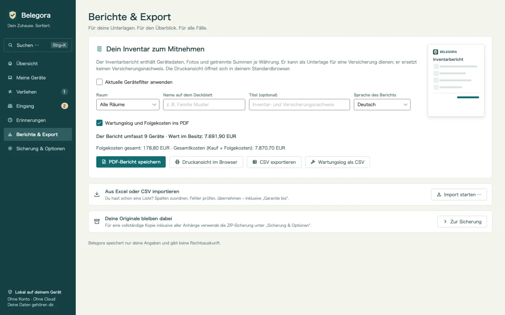
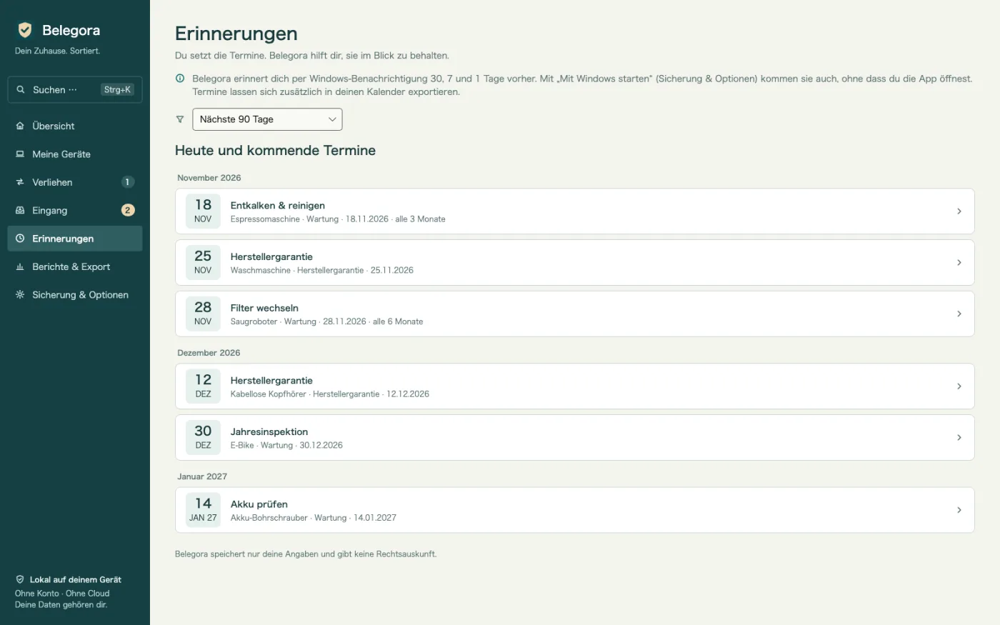

Erinnert vor deinen Fristen
Garantie, Rückgabe, Versicherung, Wartung: Belegora meldet sich per Windows-Benachrichtigung so viele Tage vorher, wie du willst.
Garantie- und Belegarchiv für Windows
Der Akku gibt nach 20 Monaten auf? Beleg, Seriennummer und Garantiedatum sind in Sekunden da. Belege vom Handy per QR-Code, Erinnerung vor deinen Fristen, Versicherungs-PDF. Offline, ohne Konto und Abo.

Belegora nimmt dir die lästigen Schritte ab: Belege einsammeln, Daten vorschlagen, an Fristen erinnern.
Garantie, Rückgabe, Versicherung, Wartung: Belegora meldet sich per Windows-Benachrichtigung so viele Tage vorher, wie du willst.
QR-Code scannen, Foto im Browser hochladen. Der Beleg landet über dein WLAN direkt im Eingang. Ohne Kabel, Cloud oder Handy-App.
Kaufdatum, Betrag und Händler werden aus dem Beleg vorgeschlagen. Du prüfst und speicherst, das Gerät ist mit einem Klick angelegt.
Die Geräteliste zeigt auf einen Blick, wo die Garantie bald endet, und „Garantie bis“ direkt in der Spalte.
Jedes Gerät nach Name, Seriennummer, Händler, Tag, Datei oder Leihnehmer finden, dazu Aktionen wie PDF oder Sicherung – mit Pfeiltasten und Enter.
Viele Belege nacheinander: links der Beleg, rechts das Kurzformular mit Vorschlägen. Enter speichert, Strg+→ überspringt.
Reparaturen, Wartung, Ersatzteile und Zubehör mit Kosten festhalten. Folgekosten und Gesamtkosten je Gerät, auch im PDF und als CSV.
Wer hat die Bohrmaschine? Verliehen an, seit wann, geplante Rückgabe – mit Erinnerung und Verlauf. Dazu einmal pro Woche ein Überblick.
Nach Wasserschaden oder Einbruch: Bericht mit Deckblatt, Aufstellung nach Raum, Summen, Fotos und Belegbildern. Berichtssprache frei wählbar.
Deine bisherige Liste übernimmst du mit Spaltenzuordnung. Export als CSV, Fristen als ICS für jeden Kalender.
Sicherungen samt Anhängen laufen automatisch. Die Wiederherstellung zeigt vorher, was zurückkommt.
Keine Cloud, kein Konto, keine Werbung, kein Tracking. Deine Daten bleiben auf deinem PC.
Gut zu wissen: Belegora speichert deine Angaben und Fristen und gibt keine Rechtsauskunft. Benachrichtigungen erscheinen, solange Belegora läuft; dafür kann die App auf Wunsch mit Windows starten. Die Texterkennung nutzt Windows-OCR und braucht das passende Windows-Sprachpaket.
Foto vom Handy per QR-Code senden, Datei in den Eingangsordner legen oder deine Excel-Liste importieren.
Belegora schlägt Datum, Betrag und Händler vor. Gerät anlegen, Frist eintragen, Vorlauf wählen.
Belegora erinnert rechtzeitig. Im Schadensfall erstellst du den Versicherungsbericht in Minuten.









14,99 €
einmalig, Preis in Deutschland
Jetzt im Microsoft Store erhältlich. Preise in anderen Ländern können abweichen.
Niemand außer dir. Belegora sendet keine Daten an uns oder Dritte, es gibt kein Konto und keine Telemetrie. Der Handy-Upload läuft nur in deinem lokalen Netz.
Lokal auf deinem PC im App-Datenordner (%LOCALAPPDATA%\MinhStudios\Belegora), zusammen mit Kopien deiner Anhänge und den automatischen Sicherungen.
Erstelle in Belegora eine Sicherung (ZIP mit allen Daten und Anhängen), kopiere sie auf den neuen PC, installiere Belegora dort und stelle die Sicherung wieder her. Die Vorschau zeigt vorher, was übernommen wird.
Nein. Belegora speichert deine Angaben und Fristen und gibt keine Rechtsauskunft. Ob ein Anspruch besteht, klärst du mit Händler, Hersteller oder Versicherung.
Benachrichtigungen erscheinen, solange Belegora läuft. Dafür kann Belegora auf Wunsch mit Windows starten. Alternativ exportierst du Fristen als ICS in deinen Kalender.